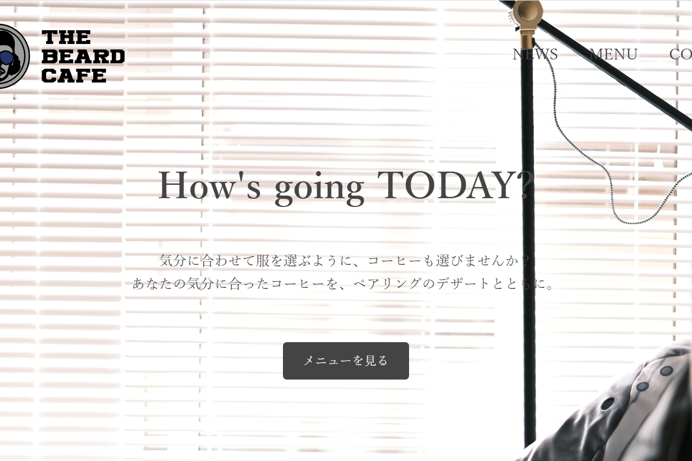

人生で初めて自らコーディングをして作成した架空のサイトです。そのため、レスポンシブも全くできていません。ただ、架空のサイトをつくりながら自分らしさをどこで出すのかを考え、フォントや画像の位置を工夫しました。
URL
https://atsuuuun.github.io/test.cafe/
担当
デザイン・コーディング・撮影(MENU,HOME)
サイトの目的
架空のサイトを作成し、どのコードを記載することでどのような挙動が起きるのかを実験しつつ、全体が見やすいようにしていきました。
ターゲット
福岡を設定しており、個人経営のカフェをペルソナとして設定。客層は20代前半から30代後半を想定しました。
デザインについて
画像が見やすいように全て同じ画像サイズにし、どの飲み物がほしいのか一目でわかるように設定。
ホーム画面からメニューへの導線に行きやすいように設定することで、ドリンクを買いに行きたいといった購買意欲の促進を考え設定しました。
客層の設定をしているため、モダンで使いやすいページのデザインをメインに考えました。
コーディングについて
参考書を見ながら、フォントやデザインの部分を自分らしさや対象者に伝えやすい構図に変更しながらサイトを作成しました。